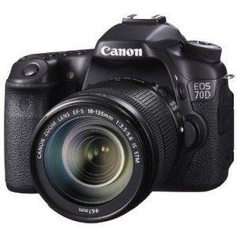

EOS 70D EF-S 18-135mm IS STM Kit

Overview
Changing the way users capture still images and video with a DSLR camera, Canon proudly introduces the EOS 70D - a trailblazing powerhouse featuring a revolutionary autofocus technology that unlocks the potential of Live View: Dual Pixel CMOS AF. This game-changing technology allows the EOS 70D to capture video in Live View with smooth and precise autofocus similar to that of a camcorder, complete with the superb image quality that is a hallmark of EOS cameras. Additionally, Dual Pixel CMOS AF provides fast and accurate autofocus during Live View still image capture, enabling you to fully benefit from the freedom of angle allowed by the Vari-angle Touch Screen 3.0-inch Clear View LCD monitor II. Compositional options are now nearly limitless with the two real-world choices of Live View and viewfinder shooting. To further empower the photographer, Canon engineers spent months ensuring that the cutting-edge Dual Pixel CMOS AF on the EOS 70D is compatible with 103† Canon EF lenses, greatly expanding creative possibilities. Built-in wireless technology and the EOS Remote app* further enhance shooting versatility, as well as enable easy sharing. Brilliant image quality is provided by the EOS 70D's 20.2 Megapixel CMOS (APS-C) sensor, a first for an EOS camera with an APS-C sized sensor. A powerful DIGIC 5+ Image Processor supports continuous shooting up to 7.0 frames per second, as well as an extended ISO range of 100-12800 (H: 25600) that allows shooting in a wide variety of lighting conditions. Stunning photos can be accomplished using the remarkable 19-point all cross-type AF system with a high precision dual cross f/2.8 center point, and advanced display options available on the Intelligent Viewfinder supply exceptional control. In-camera imaging features like HDR, HDR Backlight Control, Multiple Exposure, Handheld Night Scene, and Creative Filters available in real time help turn even simple images into spectacular photos. Elevating the possibilities of creative expression to extraordinary new heights, the powerful EOS 70D with Dual Pixel CMOS AF places the ability to capture both amazing stills and video right in your hands.
Features
Features
Dual Pixel CMOS AF
The EOS 70D features Canon's all-new Dual Pixel CMOS AF, a revolutionary leap forward in speed and accuracy that unlocks the potential of Live View shooting. This game-changing technology will forever change what is possible with a DSLR camera.
Shoot Video Like a Camcorder
The benefits of the groundbreaking Dual Pixel CMOS AF are clearly evident in video shooting, where bringing scenes and subjects into focus is a critical element of the final composition. On the EOS 70D, Dual Pixel CMOS AF helps ensure focus is achieved naturally and precisely, even when switching between subjects. And, combined with the predictive power of Movie Servo AF, subjects in motion are smoothly and consistently tracked - once the EOS 70D locks focus, it doesn't let go. Plus, with the shallow depth-of-field afforded by EOS optics, your video gains a cinematic ambience.
Compositional Freedom, Quick and Accurate Live View Focus
For stills, Dual Pixel CMOS AF makes Live View AF precise and faster than ever, freeing the photographer to take advantage of the freedom of angle afforded by the camera's Vari-angle LCD monitor. Crisp focus can be obtained nearly instantly across a wide shooting area, especially useful for those spontaneous or fleeting shots. And, when composing and shooting in Live View mode, the image, exposure and chosen effects can be previewed before shooting, ensuring better accuracy, increased comfort, and more control from the start.
Compatible with 103† Canon EF Lenses
103† Canon EF lenses are able to fully realize the benefits of Dual Pixel CMOS AF. Compatible lenses greatly expand creative and compositional possibilities so users can enjoy a wide range of endeavors made possible through various lenses whether shooting still images or video.
The Genius of Pixel Based AF
Dual Pixel CMOS AF is a cutting-edge Canon technology, made possible by a sophisticated redesigning of the CMOS sensor. Traditionally, image sensors have one photodiode per pixel, but the CMOS sensor on the EOS 70D has two photodiodes per pixel, enabling each pixel on the sensor to both perform phase-difference detection autofocus and capture light - a first for EOS cameras. With phase-difference detection AF, autofocus is achieved quickly and easily on the camera. This unique AF system enables autofocus on 80% of the image plane, vertically and horizontally, and helps ensure virtually no loss in image quality.
The simplicity and convenience of wireless technology, built-in
The new EOS 70D incorporates cutting edge wireless technology right into its compact design. The camera's exposure settings, such as aperture, shutter speed and ISO, focus, and shutter can be operated wirelessly using an iOS or Android smartphone* with the free Canon EOS Remote app**. Using a smartphone with the EOS Remote app** installed, you can shoot remotely from a distance, even in Live View mode, for those difficult-to-capture shots; you can also review images on the EOS 70D without having to take it out of the bag, and easily transfer and save images directly from the camera to a smartphone. Full DLNA (Digital Living Network Alliance) compatibility means easy sharing between the EOS 70D and other DLNA products, like HDTVs, smartphones and more. Still images can even be transferred between two wireless-enabled Canon cameras over a Local Area Network (LAN). Images and video can be uploaded instantly to CANON iMAGE GATEWAY# for easy sharing on social networking sites, and photos can even be printed on a wireless PictBridge certified printer without the need for a PC. Remarkably, the EOS 70D has all of these wireless features without the need for any additional accessories; they're built right in!
Specifications
Type
Digital AF/AE single-lens reflex camera with built-in flash
Recording Media
SD card, SDHC card, SDXC memory card
* Compatible with Ultra High Speed (UHS-I) memory cards and Eye-Fi cards (Built-in wireless LAN cannot be used simultaneously with Eye-Fi cards).
Image Format
Approx. 22.5mm x 15.0mm (APS-C)
Compatible Lenses
Canon EF lenses (including EF-S lenses)
Lens Mount
Canon EF mount
Back to TopImage Sensor
Type
CMOS Sensor
Pixels
Effective pixels: Approx. 20.2 Megapixels
Total pixels: Approx. 20.9 Megapixels
Pixel Unit
4.1 µm square
Total Pixels
Approx. 19.0 megapixels
Aspect Ratio
3:2 (Horizontal: Vertical)
Color Filter System
RGB primary color filters
Low Pass Filter
Fixed position in front of the image sensor
Dust Deletion Feature
(1) Self Cleaning Sensor Unit
Removes dust adhering to the low-pass filter.
Self-cleaning executed automatically (taking approx. 2 sec.) when power is turned on or off. Manual execution also possible (taking approx. 5 sec.).
(2) Dust Delete Data acquisition and appending
The coordinates of the dust adhering to the low-pass filter are detected by a test shot and appended to subsequent images.
The dust coordinate data appended to the image is used by the provided software to automatically erase the dust spots.